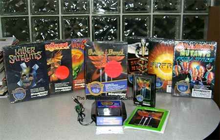

Originally called Arcadia, then renamed to StarPath, the Supercharger was an exceptionally powerful add-on module for the Atari 2600 VCS. It added 6K of additional memory and a tape cassette interface for loading in various game tapes (7 tapes in total were released officially). The system was designed by Bob Brown who was a former Atari, Inc engineer (also responsible for the Atari Video Music). The Superchargers increased memory capabilities allowed the Atari 2600 to play games that in the past were unachievable. Game such as Escape from the Mindmaster had first person 3D maze effects, even the pack-in game "Phaser Patrol" was a superior space game compared with other games available on the Atari 2600.
The Supercharger came packaged with Game #1: Phaser Patrol, the following games were sold seperately:
2. Communist Mutants From Space
3. FireBall
4. Suicide Mission
5. Escape from the Mindmaster
6. Dragonstomper
7. Killer Satellites